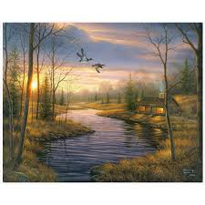

Loa paisajes, son unas de las obras mas pedidas a la hora de querer decorar una sala grande, donde las personas al entrar en ella, se topen con una hermosisima pintura

hace poco se ha agregado esta maravillosa tecnica de arte urbano, los murales, ya que debido a la demanda se a tenido que agregar a nuestros servicioos, y nuestros clientes han quedado muy satisfechos.

A la hora de hacer un regalo o llegar con un presente, nuestros clientes acuden a esta hermosa tecnica de retrato realista.